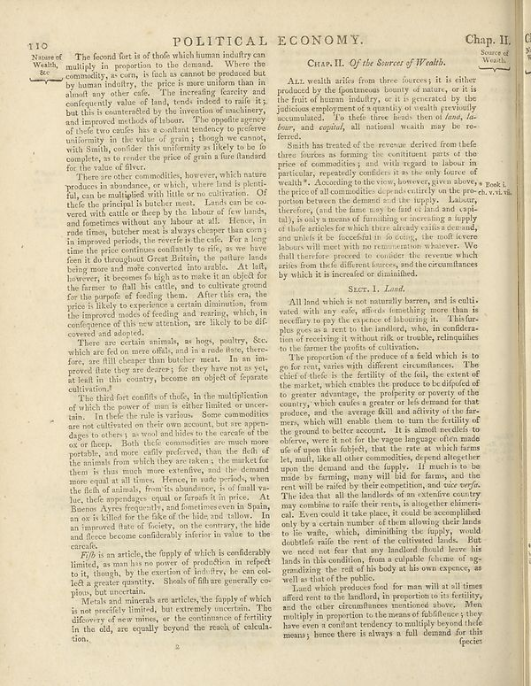

Scan ID britannica:309f765b1ecc83e0a7f7762e44b4a927a7555443:train:383
Image SHA-256 018fb71412b2c0c66f9e9afefa55448a8bc9910b962f68d60bceb3b17b3b8161
Status: ok. Running header: 110 Nature of Wash, Sc. (article_title). Removed page furniture: Page-header: 110 Nature of Wash, Sc..
PDF · raw Parse reply · LaTeX
Entries: POLITICAL ECONOMY

| # | Class | Box | Parse 3.5 | Used text | Source |
|---|---|---|---|---|---|
| 1 | Title | [0.3203, 0.0484, 0.6865, 0.0695] | POLITICAL ECONOMY. | POLITICAL ECONOMY. | super_vl |
| 2 | Caption | [0.8701, 0.0469, 0.9873, 0.0688] | Chup. II. | Chap. II. | super_vl |
| 3 | Text | [0.1162, 0.0711, 0.5029, 0.2492] | The second fort is of those which human industry can multiply in proportion to the demand. Where the commodity, a room, is flash as cannot be produced but by human industry, the price is more under than in almost any other cafe. The increasing fearty and confrequency value of land, trends indeed to make it; but this is countertled by its invention of machinery, and improved methods of labour. The opposite agency of these two causes for a soullant tendency to produce uniformity of the value of grain, though we cannot, with Smith, condlier this uniformity as likely to be fo complete, as to consi | The second fort is of those which human industry can multiply in proportion to the demand. Where the commodity, as corn, is such as cannot be produced but by human industry, the price is more uniform than in almost any other case. The increasing scarcity and consequently value of land, tends indeed to raise it; but this is counteracted by the invention of machinery, and improved methods of labour. The opposite agency of these two causes has a constant tendency to preserve uniformity in the value of grain; though we cannot, with Smith, consider this uniformity as likely to be so complete, as to | super_vl |
| 4 | Text | [0.1172, 0.2461, 0.5039, 0.4906] | There are other commodities, however, which nature products in abundance, or which, where land is plant-ful, can be multiplied with little or no cultivation. Of thefe the principal is butche meet. Lands can be co-vered with cattle or they by the labour of the lands and sometimes without any labor at all. Hence, in trade times, butche meet is always cheaper than one. Imimproved periods the reverse is thatcafe. For a long time the price continues confiantly to rife, as we have been it do throughout Great Britain, the autumn area being alone and make concerted into arabile. At left, however, it b | There are other commodities, however, which nature produces in abundance, or which, where land is plentiful, can be multiplied with little or no cultivation. Of these the principal is butcher meat. Lands can be covered with cattle or sheep by the labour of few hands, and sometimes without any labour at all. Hence, in rude times, butcher meat is always cheaper than corn; in improved periods, the reverse is the case. For a long time the price continues constantly to rise, as we have seen it do throughout Great Britain, the pasture lands being more and more converted into arable. At last, however | super_vl |
| 5 | Text | [0.1201, 0.4891, 0.5059, 0.5734] | There are certain animals, as boys, poultry, Sec, which are fed on more offs, and in a trade state, therefore, are fill cheaper than butcher meet. In an improved that they are doctors: for hery here not as yet at least in his country, become an object of separate cultivation.? | covered and adopted. There are certain animals, as hogs, poultry, &c. which are fed on mere offals, and in a rude state, there- fore, are full cheaper than butcher meat. In an im- proved state they are dearer; for they have not as yet, at least in this country, become an object of separate cultivation. | super_vl |
| 6 | Text | [0.1211, 0.5711, 0.5117, 0.8031] | The third fort conflicts of thode, in the multiplication of which the power of man is either limited or uncertain. In their the rule is various. Some commodities are not cultivated on their own account, but are appear dages to others; as wool and hides to the carre of the ox or fleece. Both their commodities are much more portable, and more easily preserved, than the field in the animals from which they are taken; the market for them is thus much more creative, and the demands more equal at all lines. Hence, in such periods, when the flesh of animals, from its abundance, is of finally vache, t | The third sort consists of those, in the multiplication of which the power of man is either limited or uncertain. In these the rule is various. Some commodities are not cultivated on their own account, but are appendages to others; as wool and hides to the carcase of the ox or fleece. Both these commodities are much more portable, and more easily preserved, than the flesh of the animals from which they are taken; the market for them is thus much more extensive, and the demand more equal at all times. Hence, in rude periods, when the flesh of animals, from its abundance, is of small value, the | super_vl |
| 7 | Text | [0.1191, 0.8008, 0.5127, 0.8695] | 7/9 is in article, the topply of which is conferably limited, as man his no power of production in respect to it, though, by the exertion of indultry, he can col- led a greater quantity. Shoals of fish are generally co- pions, but uncertain. | Fish is an article, the supply of which is considerably limited, as man has no power of production in respect to it, though, by the exertion of industry, he can collect a greater quantity. Shoals of fish are generally copious, but uncertain. | super_vl |
| 8 | Text | [0.1289, 0.8656, 0.5146, 0.9391] | Metal and minerals are articles, the supply of which is not perfectly limited, was extremely uncertain. The different of new mines, or the continuance of fertility in the old, are equally beyond the reach of calculation. | pious, but uncertain. Metals and minerals are articles, the supply of which is not precisely limited, but extremely uncertain. The discovery of new mines, or the continuance of fertility in the old, are equally beyond the reach of calcula- tion. | super_vl |
| 9 | Section-header | [0.5762, 0.0828, 0.8398, 0.1023] | CHAP.II. _Of the Source of Wealth._ | CHAP. II. Of the Sources of Wealth. | super_vl |
| 10 | Text | [0.5176, 0.1062, 0.9023, 0.2031] | ALL wealth arises from three fourores; it is either produced by the fenomenous beauty of nature, or it is the fruit of human industry, or it is generated by the judicious employment of a quantity of wealth previously accumulated. To the three heads then of _land, lao- border_, and copied, all national wealth may be covered. | All wealth arises from three sources; it is either produced by the spontaneous bounty of nature, or it is the fruit of human industry, or it is generated by the judicious employment of a quantity of wealth previously accumulated. To these three heads then of land, labour, and capital, all national wealth may be referred. | super_vl |
| 11 | Text | [0.5186, 0.2023, 0.9033, 0.4078] | Smith has tested of the revenue derived from thefe these figures as forming the constituent parts of the price of commodities; and with regard to labour in particular, repeated conflicts as the way factor of weakly. According to the view, however, given above a Book i the price of all commodities depend entirely on the pro-ch. v.vi.vic. persons between the domestic and the supply. Laonos, therefore, (and the famone may be fast of land and opi- tal), is only a means of furnishing or increasing a supply of their articles for which there already walks abroad, and the units it be beneficial to doo | Smith has treated of the revenue derived from these three sources as forming the constituent parts of the price of commodities; and with regard to labour in particular, repeatedly considers it as the only source of wealth*. According to the view, however, given above, the price of all commodities depends entirely on the proportion between the demand and the supply. Labour, therefore, (and the same may be said of land and capital), is only a means of furnishing or increasing a supply of those articles for which there already exists a demand, and unless it be successful in so doing, the most sev | super_vl |
| 12 | Section-header | [0.6562, 0.4117, 0.7666, 0.4281] | Sect. I. Land. | Sect. I. Land. | super_vl |
| 13 | Text | [0.5195, 0.4289, 0.9043, 0.5133] | All land which is not naturally burren, and is cultivated, with any cats, afterd something more than is necefary to pay the expense of labouring it. This fur- plus goes as a rest to the husband, who, or couldartion of or rejecting it without risk or trouble, relinquilies to the former the profits of cultivation. | All land which is not naturally barren, and is cultivated with any crop, affords something more than is necessary to pay the expense of labouring it. This surplus goes as a rent to the landlord, who, in consideration of receiving it without risk or trouble, relinquishes to the farmer the profits of cultivation. | super_vl |
| 14 | Text | [0.5205, 0.5125, 0.9111, 0.85] | The proportion of the producers of afield which is to go far away, varies with different circumstances. The chief of thefe is the fertility of the foil, the extent of the mask, which enables the producer to be disputed de to greater advantage, the property or poverty of the country, which caules a greater or his demand for that produce, the average-field and activity of the farnes, which will enable them to turn the fertility of the ground to better account. It is almost one-click to delivery, were less for the vague language often made use of upon this subject, that the rate at which farms le | The proportion of the produce of a field which is to go for rent, varies with different circumstances. The chief of these is the fertility of the soil, the extent of the market, which enables the produce to be disposed of to greater advantage, the propriety or poverty of the country, which causes a greater or less demand for that produce, and the average skill and activity of the farmers, which will enable them to turn the fertility of the ground to better account. It is almost needless to observe, were it not for the vague language often made use of upon this subject, that the rate at which f | super_vl |
| 15 | Text | [0.5293, 0.8477, 0.9121, 0.9437] | Land which produces food for men will at all three afford to the landlad, in proportion to its fertility, and the other circumstances mentioned above. Men multiply in proportion to the means of fullerenes they have even a constant tendency to multiply beyond those means; hence there is always a full demand for this species | Land which produces food for man will at all times afford rent to the landlord, in proportion to its fertility, and the other circumstances mentioned above. Men multiply in proportion to the means of subsistence; they have even a constant tendency to multiply beyond those means; hence there is always a full demand for this species | super_vl |
Britannica scans: National Library of Scotland, CC0 1.0. Wikipedia text: Wikipedia contributors, CC BY-SA 4.0, revision links on each page. Generated 2026-10-18T13:26:14+00:00.